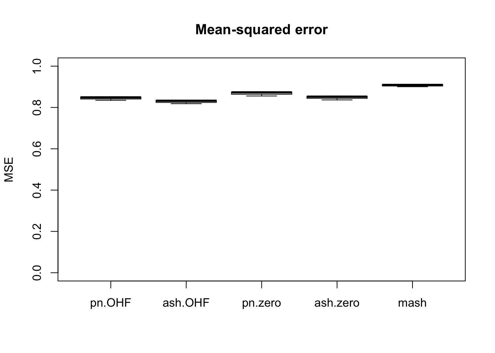
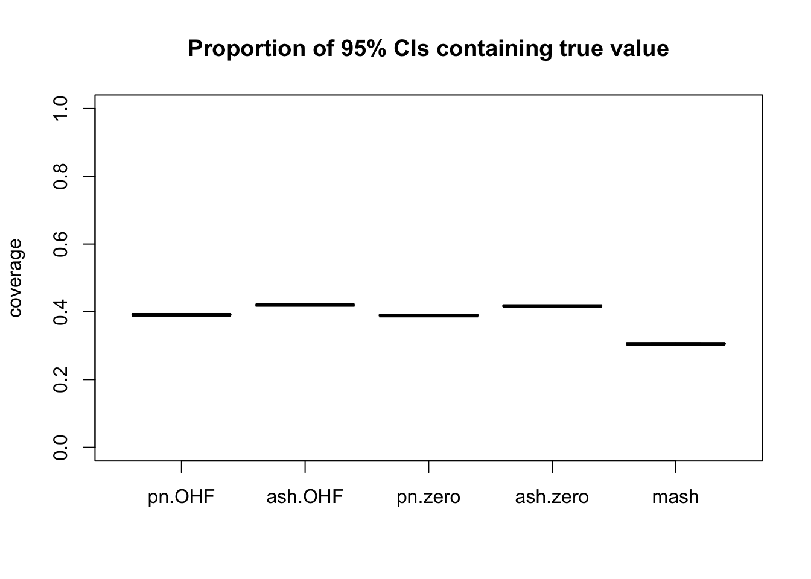
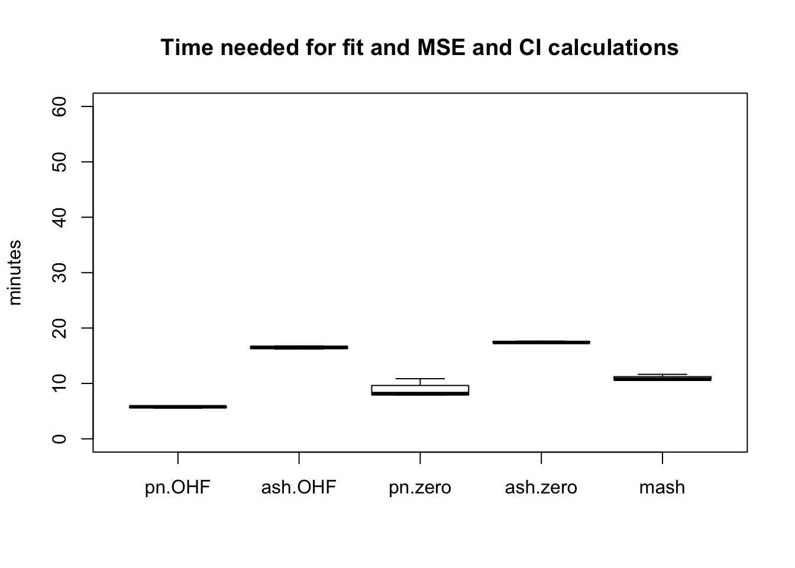

Last updated: 2018-07-31
workflowr checks: (Click a bullet for more information) ✔ R Markdown file: up-to-date
Great! Since the R Markdown file has been committed to the Git repository, you know the exact version of the code that produced these results.
✔ Environment: empty
Great job! The global environment was empty. Objects defined in the global environment can affect the analysis in your R Markdown file in unknown ways. For reproduciblity it’s best to always run the code in an empty environment.
✔ Seed:
set.seed(20180609)
The command set.seed(20180609) was run prior to running the code in the R Markdown file. Setting a seed ensures that any results that rely on randomness, e.g. subsampling or permutations, are reproducible.
✔ Session information: recorded
Great job! Recording the operating system, R version, and package versions is critical for reproducibility.
✔ Repository version: 919319a
wflow_publish or wflow_git_commit). workflowr only checks the R Markdown file, but you know if there are other scripts or data files that it depends on. Below is the status of the Git repository when the results were generated:
Ignored files:
Ignored: .DS_Store
Ignored: .Rhistory
Ignored: .Rproj.user/
Ignored: data/.DS_Store
Ignored: docs/.DS_Store
Ignored: docs/images/.DS_Store
Ignored: docs/images/.Rapp.history
Ignored: output/.DS_Store
Ignored: output/.Rapp.history
Ignored: output/MASHvFLASHgtex/.DS_Store
Ignored: output/MASHvFLASHsims/.DS_Store
Ignored: output/MASHvFLASHsims/backfit/.DS_Store
Ignored: output/MASHvFLASHsims/backfit/.Rapp.history
Untracked files:
Untracked: code/MASHvFLASHgtex2.R
Untracked: code/gtex3.R
Untracked: output/MASHvFLASHrandom/
Unstaged changes:
Modified: code/MASHvFLASHgtex.R
| File | Version | Author | Date | Message |
|---|---|---|---|---|
| Rmd | 919319a | Jason Willwerscheid | 2018-07-31 | wflow_publish(“analysis/MASHvFLASHrandom.Rmd”) |
I repeat the previous experiment, this time using 20000 random tests from the GTEx dataset. An important difference from the “strong” dataset is that many more of these tests will be null.
I again pre-run the experiments and load the results from file.
fl_diag <- readRDS("./output/MASHvFLASHrandom/fldiag.rds")
fl_t <- readRDS("./output/MASHvFLASHrandom/flt.rds")
m_diag <- readRDS("./output/MASHvFLASHrandom/mdiag.rds")
m_t <- readRDS("./output/MASHvFLASHrandom/mt.rds")Comparisons of mean-squared error and confidence interval coverage are as follows. FLASH again outperforms MASH, but not quite so drastically it did on the “strong” tests.
fl_fit_names <- c("pn.zero", "pn.OHF", "ash.zero", "ash.OHF")
method.names <- c(fl_fit_names, "mash")
all_t <- rbind(sapply(fl_t, unlist), unlist(m_t))
rownames(all_t) <- method.names
fl_mse <- sapply(fl_diag, function(x) {sapply(x, function(y) {y$mse})})
all_mse <- rbind(fl_mse, sapply(m_diag, function(x) {x$mse}))
rownames(all_mse) <- method.names
fl_ci <- sapply(fl_diag, function(x) {sapply(x, function(y) {y$ci})})
all_ci <- rbind(fl_ci, sapply(m_diag, function(x) {x$ci}))
rownames(all_ci) <- method.names
plot.order <- c(2, 4, 1, 3, 5)
boxplot(t(all_mse[plot.order, ]), ylim=c(0, 1), ylab = "MSE",
main = "Mean-squared error")
boxplot(t(all_ci[plot.order, ]), ylim=c(0, 1), ylab = "coverage",
main = "Proportion of 95% CIs containing true value")
The total time required by each method is as follows.
boxplot(t(all_t[plot.order, ]), ylim=c(0, 60), ylab="minutes",
main="Time needed for fit and MSE and CI calculations")
The “OHF” method again gives the best results, but not as convincingly as it did when fitting the “strong” dataset. And point-normal priors again give results that are only slightly worse than ash priors, but take about half of the time to fit.
The code is the same as in the previous experiment (to reproduce the above results, uncomment the commented-out lines).
sessionInfo()R version 3.4.3 (2017-11-30)
Platform: x86_64-apple-darwin15.6.0 (64-bit)
Running under: macOS High Sierra 10.13.6
Matrix products: default
BLAS: /Library/Frameworks/R.framework/Versions/3.4/Resources/lib/libRblas.0.dylib
LAPACK: /Library/Frameworks/R.framework/Versions/3.4/Resources/lib/libRlapack.dylib
locale:
[1] en_US.UTF-8/en_US.UTF-8/en_US.UTF-8/C/en_US.UTF-8/en_US.UTF-8
attached base packages:
[1] stats graphics grDevices utils datasets methods base
loaded via a namespace (and not attached):
[1] workflowr_1.0.1 Rcpp_0.12.17 digest_0.6.15
[4] rprojroot_1.3-2 R.methodsS3_1.7.1 backports_1.1.2
[7] git2r_0.21.0 magrittr_1.5 evaluate_0.10.1
[10] stringi_1.1.6 whisker_0.3-2 R.oo_1.21.0
[13] R.utils_2.6.0 rmarkdown_1.8 tools_3.4.3
[16] stringr_1.3.0 yaml_2.1.17 compiler_3.4.3
[19] htmltools_0.3.6 knitr_1.20 This reproducible R Markdown analysis was created with workflowr 1.0.1